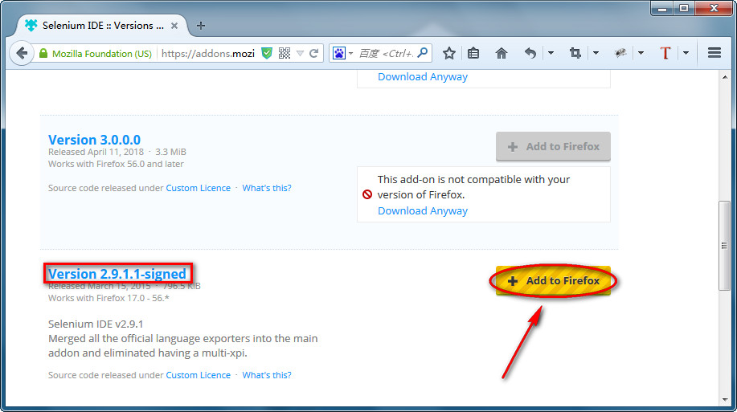
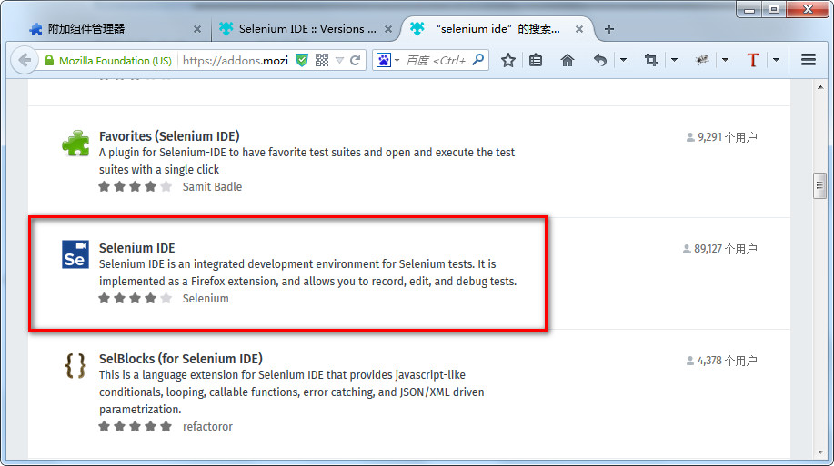

Selenium IDE安装与运行
目标
1. 使用Selenium IDE录制脚本
2. 使用Selenium IDE录制的脚本转换成Python语言
1. Selenium IDE 是什么？
Selenium IDE：是一个Firefox插件，用于记录和播放用户与浏览器的交互。 （录制Web操作脚本）
1.1 为什么要学习Selenium IDE？
1. 使用Selenium IDE录制脚本，体验自动化脚本魅力
2. 使用Selenium IDE录制的脚本转换为代码语言
(在后期我们自己设计脚本时，如果不知道用什么方式定位元素，可使用此方法参考)
1.2 安装方式
1. 官网安装
Version: 2.9.1.1
通过官网安装插件：https://addons.mozilla.org/en-GB/firefox/addon/selenium-ide/versions/
2. 附加组件管理器
1). 火狐浏览器 V24-V35
2). 附加组件管理器-->搜索selenium IDE
提示：
1. IDE前面有个空格
2. 附加组件管理器启动方式-
1) 工具菜单->附加组件
2) Ctrl+Shift+A
3. 离线安装
下载：https://github.com/SeleniumHQ/selenium-ide/releases
安装：下载好selenium_ide-2.9.1-fx.xpi直接拖入浏览器安装
官网安装

附加组件管理器 安装
搜索selenium IDE示意图

点击查看全部XX项结果

选择selenium IDE安装

滚动条下拉选择 查看所有版本
火狐浏览器 V35.0 选择 selenium IDE 2.9.1.1
1.3 Selenium IDE运行
启动方式
1. 点击菜单‘工具’——>Selenium IDE
2. Ctrl+Alt+S
3. 点击浏览器工具栏中的Selenium IDE图标

1. 文件：创建、打开和保存测试案例和测试案例集。编辑：复制、粘贴、删除、撤销和选择测试案例中的所有命
令。Options : 用于设置seleniunm IDE。
2. 用来填写被测网站的地址。
3. 速度控制：控制案例的运行速度。
4. 运行所有：运行一个测试案例集中的所有案例。
5. 运行：运行当前选定的测试案例。
6. 暂停/恢复：暂停和恢复测试案例执行。
7. 单步：可以运行一个案例中的一行命令。
8. 录制：点击之后，开始记录你对浏览器的操作。
9. 案例集列表。
10. 测试脚本；table标签：用表格形式展现命令及参数。source标签：用原始方式展现，默认是HTML语言格式，
也可以用其他语言展示。
11. 查看脚本运行通过/失败的个数。
12. 当选中前命令对应参数。
13. 日志/参考/UI元素/Rollup
练习1
需求：使用Selenium IDE插件录制->打开百度搜索引擎，搜索框输入[淘宝官网]，点击[百度一下]按钮
练习1 脚本
重点分析：
1. 录制：录制时红色录制按钮一定要打开->按下状态
2. 回放：由于网络延迟原因-建议选择最低
3. 浏览器：回放时浏览器要保持打开状态（否则点击回放，脚本无响应）
将录制脚本转换成Python语言
文件菜单->Export Test Cast As..->python2/unittest/WebDriver
重点说明：
1. id=kw：为百度搜索文本框id属性和值
2. id=su: 为百度一下按钮id属性和值
思考？
如何快速查找一个元素标签的属性和值？
2. Firebug定位调试插件【重要】
Firebug是火狐浏览器一款插件，它集HTML查看和编辑、Javascript控制台、网络状况监视器于一体，是开发JavaScript、CSS、HTML和Ajax的得力助手。
作用：定位元素(获取元素定位和查看元素属性)；
2.1 Firebug 插件安装

在线安装：
1). 火狐浏览器 V35
2). 附加组件管理器-->搜索FireBug
练习2
需求：实现天涯论坛自动登录个人账号，登录之后再退出系统
测试数据：
1. 地址：http://bbs.tianya.cn/
2. user: itest2018
3. pwd: xxx
提示：
通过Selenium IDE录制生成的用例步骤，有时候我们需要对脚本步骤进行修改（比如修改一些输入的数据），
或者要手动添加一些步骤，所以我们有必要学习对Selenium IDE脚本的编辑和操作。
3. Selenium IDE脚本编辑与操作 【了解】
目的：手动修改或编写脚本
3.1 编辑一行命令
在Table标签下选中某一行命令，命令由command、Target、value三部分组成。可以对这三部分内容那进行编辑。
3.2 插入命令
在某一条命令上右击，选择“insert new command”命令，就可以插入一个空白，然后对空白行进程编辑
3.3 插入注释
鼠标右击选择“insert new comment”命令插入注解空白行，本行内容不被执行，可以帮助我们更好的理解脚本，
插入的内容以紫色字体显示。
3.4 移动命令
有时我们需要移动某行命令的顺序，我们只需要左击鼠标拖动到相应的位置即可。
3.5 删除命令
选择单个或多个命令，然后点击鼠标右键选择“Delete”
3.6 命令执行
选定要执行的命令右键选择‘Execute this command’
注意：有一些命令必须依赖于前面命令的运行结果才能成功执行，否则会导致执行失败。
提示：
我们对脚本的编辑和操作已有所了解，那么我们练习1和练习2录制出来的脚本中那些命令又都是有什么作用?
4. Selenium IDE常用命令【了解】
在这里我们只对几个常用的命令做个介绍
4.1 open(url)命令
作用：打开指定的URL，URL可以为相对或是绝对URL；
Target：要打开的URL；value值为空
1). 当Target为空，将打开Base URL中填写的页面；
2). 当Target不为空且值为相对路径，将打开Base URL + Target页面。
例如，假设Base URL为http://www.baidu.com，而Target为/error.html，
则执行open命令时，将打开http://www.baidu.com/error.html
3). 当Target以http://开头时，将忽略Base URL，直接打开Target的网址；
4.2 pause(waitTime)
作用：暂停脚本运行
waitTime：等待时间，单位为ms；//Target=1000
4.3 goBack()
作用：模拟单击浏览器的后退按钮；
提示：由于没有参数，所以Target和Value可不填；
4.4 refresh()
作用：刷新当前页；
提示：由于没有参数，所以Target和Value可不填；
4.5 click(locator)
作用：单击一个链接、按钮、复选框或单选按钮；
4.6 type(locator,value)
作用：向指定输入域中输入指定值；也可为下拉框、复选框和单选框按钮赋值.
Target：元素的定位表达式；
Value：要输入的值；
4.7 close()
作用：模拟用户单击窗口上的关闭按钮；
提示：由于没有参数，所以Target和Value可不填；
4.8 课堂练习
在Selenium IDE中手动完成以下操作的命令编写：
1. 访问百度网站：http://www.baidu.com
2. 搜索python
3. 点击百度一下
4. 暂停3秒
5. 访问hao123网站：http://www.hao123.com
6. 暂停3秒
7. 回退到百度页面
8. 暂停3秒
9. 刷新页面
10. 关闭页面
5. 总结
1. 为什么学习Selenium IDE插件工具
2. Selenium IDE安装、启动方式
3. FireBug作用
4. Selenium IDE常用命令